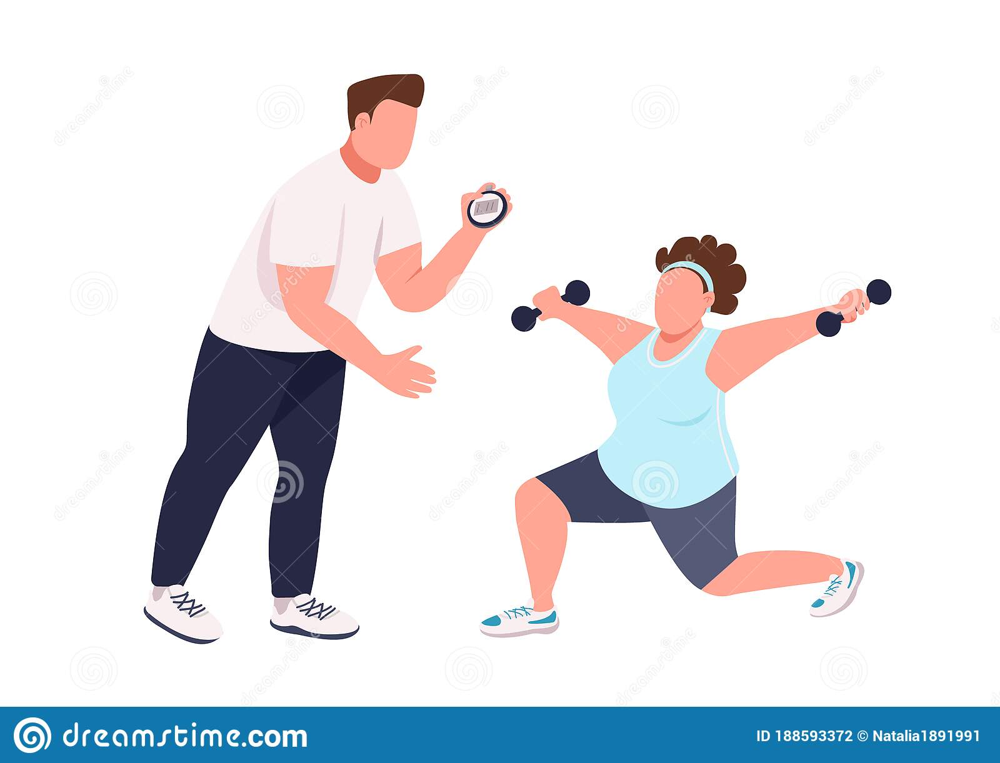

Para cada mundo esta su gente...
y por eso existen profesionales dedicados especificamente a cada una de las áreas de la salud, como por ejemplo:
Médicos generales
Se encargan de analizar al paciente e indicarle a cual profesional especialista debe de asistir

Entrenadores físicos
Se encargan de prescribir el ejercicio adaptado a las necesidades personales y fisiológicas de cada persona

Psicológos
Se encargan de ayudar a las personas a tener una buena salud mental
Enre otros más como: nutricionistas, fisioterapeutas, psiquitras... Todos ellos se han preparado por años para darte una buena vida!